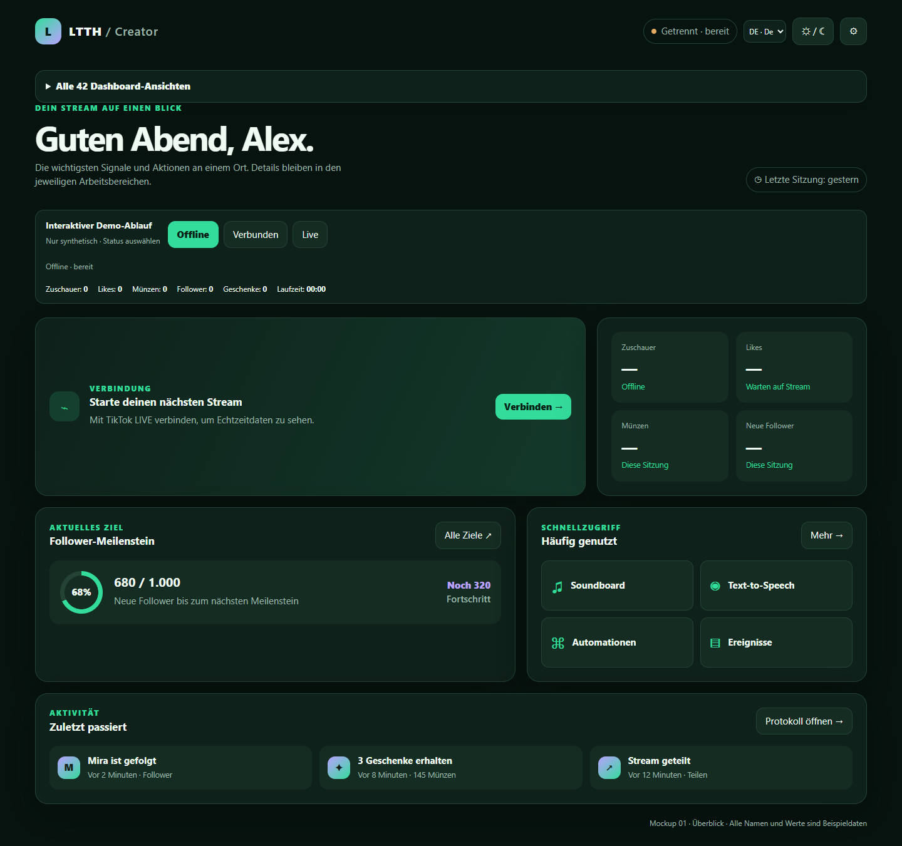
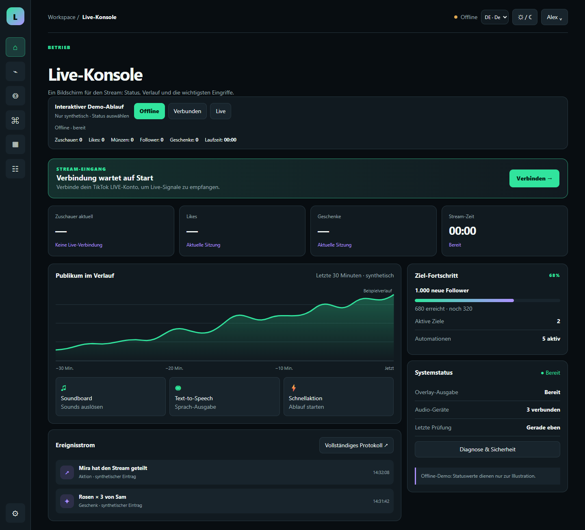
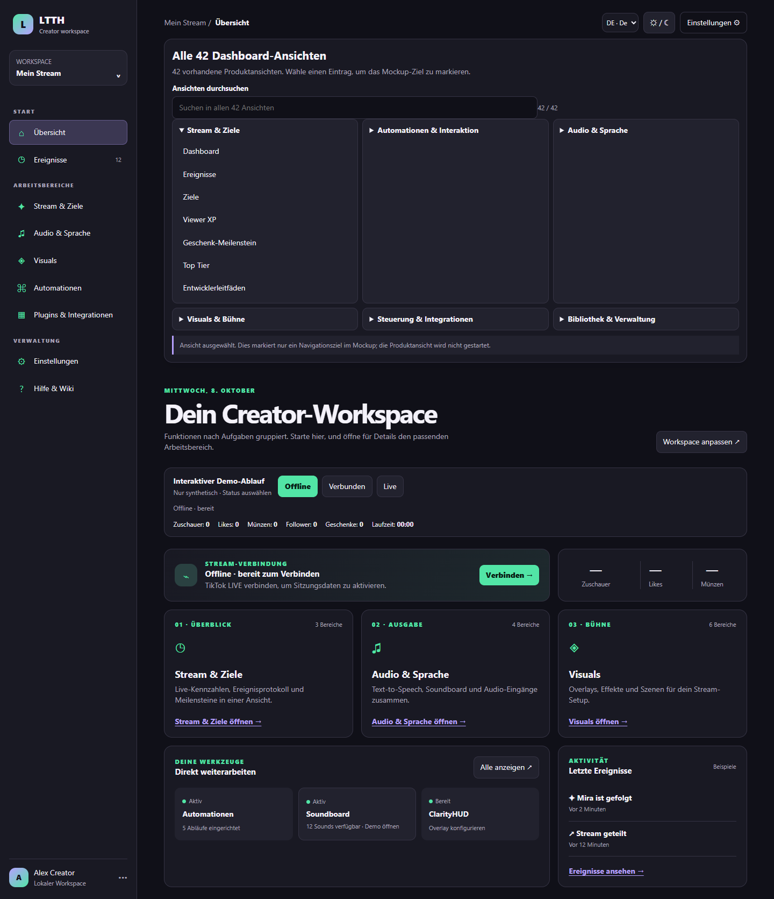

Richtung 01
Creator-Überblick
Ein ruhiger Start mit Verbindung, vier KPIs, einem Ziel, häufigen Aktionen und jüngster Aktivität.
Abwägung: leichter Einstieg; mehrere Plugin-Details liegen hinter „Mehr“.
Interaktives Mockup öffnen Jede Vorschau führt zu einem eigenständigen lokalen Mockup. Vergleiche, wie Startübersicht, Livebetrieb und aufgabenorientierte Arbeitsbereiche die vorhandenen Funktionen unterschiedlich ordnen. Die Beispiele sind synthetisch; die Mockups sind nicht mit dem Produkt verbunden.
Hinweis: Die Vorschauen zeigen den aktuellen synthetischen Offlinezustand. Die HTML-Mockups enthalten zusätzlich einen interaktiven Status-Demoablauf.

Ein ruhiger Start mit Verbindung, vier KPIs, einem Ziel, häufigen Aktionen und jüngster Aktivität.

Eine Betriebsansicht mit Status, zeitlichem Verlauf, Ereignisstrom und wichtigen Live-Aktionen.

Funktionen werden nach Aufgaben wie Audio, Visuals, Automationen und Integrationen gruppiert.
Die drei Richtungen sind gleichberechtigte Optionen. Die Paritätsmatrix zeigt, welche bestehenden Blöcke sichtbar bleiben, in Bereiche wandern oder in den Entwürfen fehlen. Sie enthält noch offene Fragen, darunter den Schnellzugriff auf den OpenShock-Notstopp.
Matrix und offene Fragen →